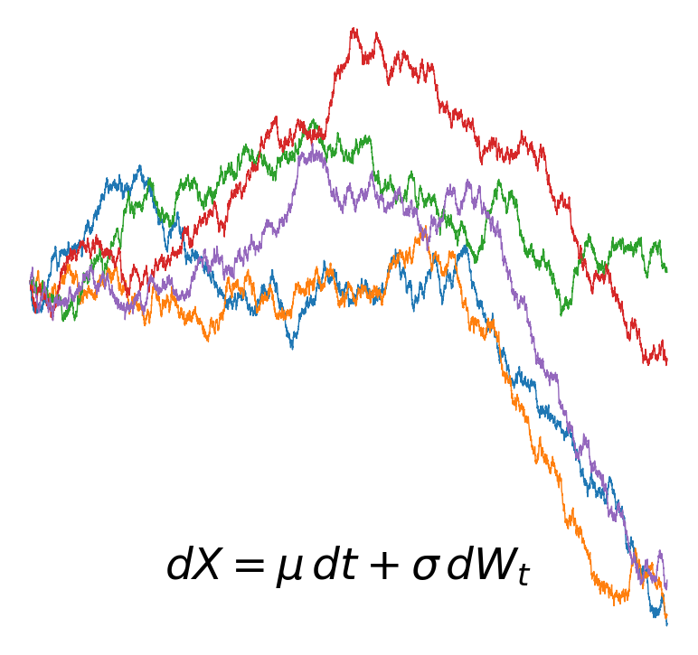
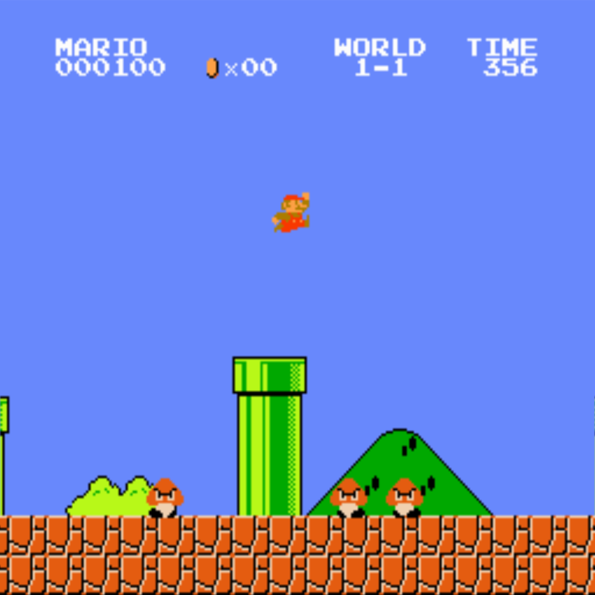

Research interests
My research interests broadly span robot learning, with a focus on vision language action models and diffusion based approaches for tasks involving mobile manipulation, long horizon planning, dexterous manipulation or super human performance. Specifically, I am curious about hierarchical approaches and approaches that support continual learning.
-
Mobile manipulation
-

Dexterous manipulation
-
Continual Learning
Projects
-

Continuous-Time Diffusion Policies for Visuomotor Control:
A Stochastic Calculus PerspectiveReframed diffusion policies as controlled SDEs (VP/VE/CLD) for visuomotor control. Implemented multiple samplers and compared robustness on the PushT benchmark. Found VP-SDE performs best and most consistently (≈0.78-0.80 success).
-

GeoVision: Fine-Grained Urban Geolocation in San Francisco via Distribution-Aware Visual Models
GeoVision predicts where a street photo was taken within San Francisco using a Vision Transformer (StreetCLIP) plus custom geolocation heads. A 31x31 grid classifier reaches 66.8% top-1 accuracy, while a probabilistic Gaussian head achieves ~600m mean localization error and provides uncertainty estimates. The project includes map-based visualizations and attention rollouts to show what cues the model uses when localizing images.
-

MARIO: Reinforcement Learning on Image Observations
We trained PPO and DQN agents to play Super Mario Bros. directly from raw pixels (stacked grayscale frames with the full 12-action control space), achieving 96.32% Level 1-1 completion with PPO using a top-k (k=3) pseudo-greedy inference strategy and pushing DQN to ~91% with PPO-inspired architecture/preprocessing changes; we then evaluated transfer from Level 1-1 to Level 1-2 and found generalization remained challenging under visual/dynamics shift even after retraining.